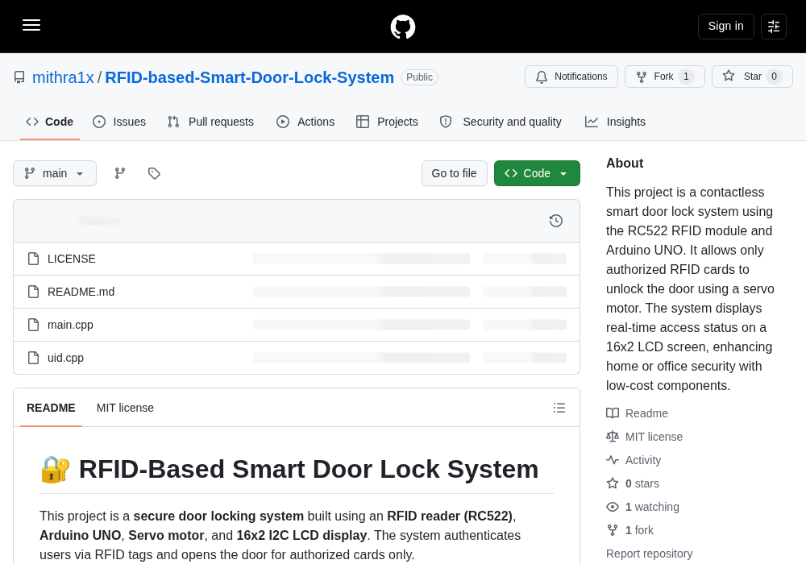

Combine the retained MIT project’s RC522, LCD, and small-servo connections in a bench/lab demonstrator. A user-owned practice tag makes a 16×2 LCD say “Tag seen” and moves an unloaded paper pointer to a “TAG SEEN” mark, then back to “WAITING.” The tag is only noticed: the sketch makes no identity, permission, or security decision.
Gather the parts
Uno-compatible board and USB cable
RC522 / MFRC522 RFID reader breakout with antenna board
I2C LCD1602 module with a four-pin I2C backpack
One small, matching standard-position hobby servo and a lightweight paper pointer
One RFID card or key fob that you own or are explicitly authorized to use in a lab
Breadboard and fourteen male-to-male jumper wires
Safety and permission boundary: unplug USB before moving wires. Power the RC522 from 3.3 V only, never 5 V. The source connections use 5 V for the LCD and the one small matching servo. Keep the servo horn clear of fingers, hair, sleeves, and objects; attach only a light paper pointer, do not force or block it, and stop/unplug if any part is hot, damaged, smells unusual, or makes the board reset. Scan only user-owned or lab RFID tags with clear permission. Do not use this lesson to secure people or property, operate a real door, gate, latch, relay, or mechanism, or make an access decision.
Build it, one check at a time
Step 1 — Change the source project’s purpose
The retained MIT source shows an RC522 reader, an I2C LCD, and a servo on an Uno. It also contains a stored UID comparison and real-door language. We will use only its published wiring and harmless scan flow. Do not copy its comparison, permission text, or door behavior. Make a tiny desk sign with two marks: WAITING and TAG SEEN. Fit a light paper pointer to the small unloaded servo horn; it points at a sign, not a lock.

Reference image: an unchanged capture of the public RFID-Based Smart Door Lock System repository by mithra1x. Its README provides the RC522, LCD, and small-servo/Uno tables used below. The project is under the MIT License; attribution and the actual public pages are linked in Reference pages. This lesson does not reuse its credential comparison or real-door purpose.
Step 2 — Wire the RC522 reader
With USB still unplugged, read each printed breakout label and match the retained source’s RC522 table. On many RC522 boards, SDA means the SPI select pin here, not the Uno’s I²C SDA pin. Leave IRQ unconnected.
RC522 3.3V → Arduino 3.3V
RC522 GND → Arduino GND
RC522 SDA (SS) → Arduino D10
RC522 SCK → Arduino D13
RC522 MOSI → Arduino D11
RC522 MISO → Arduino D12
RC522 RST → Arduino D9
These SPI pins are for an Uno-compatible board. If yours is different, stop and check its own documentation before applying power.
Step 3 — Add the display and paper-pointer servo
The retained source’s LCD table uses a four-pin I2C backpack:
LCD VCC → Arduino 5V
LCD GND → Arduino GND
LCD SDA → Arduino A4 (SDA)
LCD SCL → Arduino A5 (SCL)
Then connect the source’s matching small-servo table: Arduino D3 → servo signal, servo VCC → Arduino 5V, and servo GND → Arduino GND. Check your servo’s own labels and documentation: wire colours and plug order vary. The LCD’s SDA/A4 and the reader’s SDA/SS/D10 are different interfaces. This is a one-small-servo desk demonstration only; do not add a load, more servos, or another power setup from this lesson.
Step 4 — Upload a notice-and-pointer sketch
In Arduino IDE, install MFRC522 by GithubCommunity and the LiquidCrystal_I2C library supplied for your LCD/kit. The source uses `MFRC522(10, 9)`, LCD `0x27` at 16×2, and servo pin 3. This original teaching sketch keeps those validated connections, but does not print, store, compare, or act on a UID. It moves only the paper pointer after any permitted practice tag is noticed.
The Servo library controls a low-voltage paper pointer only. The sketch has no allow list, stored UID, matching loop, card-memory command, UID display, permission wording, relay pin, or real-world hardware command.
Step 5 — Observe, then reset safely
Reconnect USB. The pointer should aim at WAITING and the LCD should show its waiting message. Hold your own/lab tag flat near the reader: the pointer should briefly point at TAG SEEN while the LCD says Tag seen, then return to WAITING. If anything strains, chatters, becomes hot, or resets the board, unplug USB before checking the unloaded pointer and wiring. If the LCD backlight is on but letters are missing, unplug USB before gently adjusting its contrast screw or consulting its documentation. Do not rename these messages as a person, approval, denial, entry result, or security result.
Tiny challenge
Replace the paper sign’s two labels with “READY” and “NOTICED,” then change the LCD’s second line to another 16-character-or-fewer lab reminder. Explain why a physical pointer can show an observation without being a security device.
The reference image is unchanged and visibly attributed to mithra1x’s MIT-licensed repository. The learner-facing instructions and notice-and-pointer teaching sketch are original. No physical hardware was tested for this lesson.